<meta charset="utf-8"><title>11/11のコラム note貼り付け</title>
<style>
/* one column of numbered paste steps; text steps vs image steps differ by marker */
:root{--bg:#F5F4F0;--card:#FFFFFF;--ink:#1D2321;--mute:#5F665F;--line:#DCDAD2;--btn:#1F5FBF;--btnok:#2E8B4F;--img:#E9F3EC;--imgink:#22663B;--sans:'IBM Plex Sans JP','Hiragino Sans','Noto Sans JP',sans-serif}
@media (prefers-color-scheme:dark){:root:not([data-theme="light"]){--bg:#171A19;--card:#202423;--ink:#ECEDE8;--mute:#A3AAA2;--line:#343937;--btn:#4D8BE6;--btnok:#3FA866;--img:#1E2C23;--imgink:#8FD3A6;color-scheme:dark}}
:root[data-theme="dark"]{--bg:#171A19;--card:#202423;--ink:#ECEDE8;--mute:#A3AAA2;--line:#343937;--btn:#4D8BE6;--btnok:#3FA866;--img:#1E2C23;--imgink:#8FD3A6;color-scheme:dark}
body{background:var(--bg);color:var(--ink);font-family:var(--sans);font-size:15px;line-height:1.75;padding:20px 16px 60px}
main{max-width:680px;margin:0 auto;display:grid;gap:28px}
header h1{font-size:22px;margin:0 0 6px;text-wrap:balance}
header p{margin:0;color:var(--mute);font-size:14px}
nav{display:flex;gap:8px;flex-wrap:wrap;margin-top:12px}
nav a{border:1px solid var(--line);border-radius:999px;padding:4px 14px;color:var(--ink);text-decoration:none;font-size:14px;background:var(--card)}
.part h2{font-size:18px;line-height:1.5;margin:0 0 12px;text-wrap:balance;display:flex;gap:10px;align-items:baseline;flex-wrap:wrap}
.tag{font-size:13px;background:var(--ink);color:var(--bg);border-radius:6px;padding:1px 9px}
.steps{list-style:none;margin:0;padding:0;display:grid;gap:12px}
.st{background:var(--card);border:1px solid var(--line);border-radius:12px;padding:12px;min-width:0}
.hd{display:flex;align-items:center;gap:8px;margin-bottom:8px}
.no{width:26px;height:26px;border-radius:50%;background:var(--btn);color:#fff;display:inline-flex;align-items:center;justify-content:center;font-size:13px;font-weight:700;flex:0 0 26px}
.im .no{background:var(--btnok)}
.hd em{font-style:normal;font-size:12px;background:var(--img);color:var(--imgink);border-radius:6px;padding:0 8px}
.bx{font-size:13.5px;line-height:1.7;border:1px solid var(--line);border-radius:8px;padding:8px 10px;max-height:110px;overflow:auto;overflow-wrap:anywhere}
.bx.tall{max-height:150px}.bx p{margin:0 0 6px}.bx h2{font-size:14px;margin:8px 0 4px}.bx a{color:var(--btn)}
.st img{display:block;width:100%;max-width:100%;border:1px solid var(--line);border-radius:8px}
.sub{font-size:12.5px;color:var(--mute);margin:6px 0 0}
.cp{width:100%;margin-top:8px;padding:12px;border:0;border-radius:10px;background:var(--btn);color:#fff;font:600 15px var(--sans);cursor:pointer}
.cp.ok{background:var(--btnok)}.cp.dl{background:var(--btnok)}.cp:focus-visible{outline:3px solid var(--ink);outline-offset:2px}
.xh{font-size:15px;margin:20px 0 10px}
.fb{font-size:13px;line-height:1.7;margin:8px 0 0;padding:8px 10px;border-radius:8px;background:var(--img);color:var(--imgink)}
.opts{display:grid;grid-template-columns:repeat(auto-fill,minmax(240px,1fr));gap:10px}
.opt{min-width:0}.opt img{display:block;width:100%;border:1px solid var(--line);border-radius:8px}
.ol{display:flex;align-items:center;gap:8px;margin-top:6px}.ol b{font-size:13px;flex:0 0 auto}.ol .on{font-size:12.5px;color:var(--mute);flex:1;min-width:0}.ol .cp{width:auto;flex:0 0 auto;padding:9px 14px}.ol .cp{margin:0;padding:9px}
.toast{font-size:13px;color:var(--mute);margin-top:6px}
</style>
<main><header><h1>11/11のコラム note貼り付け</h1><p>いま公開済みは6本です。青い番号は文章、緑は画像です。</p><nav><a href="#p1">1</a><a href="#p2">2</a><a href="#p3">3</a><a href="#p4">4</a><a href="#p5">5</a><a href="#p6">6</a></nav></header><section class="part" id="p1"><h2><span class="tag">OFF GRID</span>ハースは4人で上限に　平川亮、カタールとアブダビで再びF1の可能性</h2><p class="sub">サイトに公開：08:10</p><ol class="steps">
<li class="st im"><div class="hd"><span class="no">1</span><b>見出し画像</b><em>画像</em></div>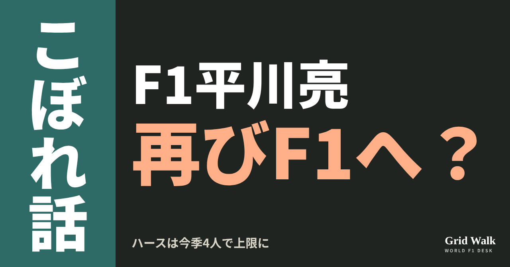<button class="cp dl" data-img="img/hirakawa-haas-four-driver-rule-20261111.png" data-name="hirakawa-haas-four-driver-rule-20261111_見出し画像.png">ダウンロード</button></li>
<li class="st"><div class="hd"><span class="no">2</span><b>タイトル</b></div><div class="bx" id="p1t">ハースは4人で上限に　平川亮、カタールとアブダビで再びF1の可能性</div><button class="cp" data-plain="p1t">タイトルをコピー</button></li>
<li class="st"><div class="hd"><span class="no">3</span><b>本文</b></div><div class="bx tall" id="p1r"><p>1年の決勝に使えるドライバーは、1チーム4人まで。ハースはサンパウロGPで、その4人目を使いました。オリバー・ベアマン、エステバン・オコン、平川亮、そしてラファエル・カマラです。ドイツのMotorsport-Totalは11月10日、この決まりのために、ハースはカタールとアブダビで平川をもう一度走らせざるを得なくなるかもしれない、と指摘しました（同じ記事はFormel1.deに掲載）。ハースは、まだ何も発表していません。</p><p>ドイツの元の記事とFIAの規則・F2の日程へのリンク、関連コラムへの案内はサイトで → <a href="https://f1gridwalk.github.io/lens/hirakawa-haas-four-driver-rule-20261111/?utm_source=note&amp;utm_campaign=hirakawa-haas-four-driver-rule-20261111">https://f1gridwalk.github.io/lens/hirakawa-haas-four-driver-rule-20261111/?utm_source=note&amp;utm_campaign=hirakawa-haas-four-driver-rule-20261111</a></p><h2>規則にあるのは短い一文</h2><p>FIAの2026年F1競技規則は、B1.7.1でこう決めています。</p><blockquote><p>「選手権の間、各参戦者は、決勝に最大4人のドライバーを使うことができる」（FIA 2026年F1競技規則 B1.7.1／国際）</p></blockquote><p>条文の読み方は、DEEP GRID（ https://f1gridwalk.github.io/deep/driver-change-midweekend/ ）とルールブック（ https://f1gridwalk.github.io/deep/rules/driver-count/ ）で。</p><p>同誌によると、1チームが1年に4人を超えるドライバーを使ったのは、2001年のプロスト（ジャン・アレジら5人）が最後。決まりが改められたのは2004年からです。</p><h2>カマラはF2の首位</h2><p>F2の最後の2大会は、カタール（11月27〜29日）とアブダビ（12月4〜6日）。F1のカタールGP（11月29日）、アブダビGP（12月6日）と同じ週末です（FIA）。F1は11月10日、予備の開催地だったイモラに最終戦の開催は要らないと伝え、シーズンは予定どおりカタールとアブダビで終わる見込みになりました（The Race／イギリス）。</p><p>カマラはF2で207点の首位、ニコラ・ツォロフが200点で続きます（FIA）。カマラが王座争いを選べば、ハースには平川のほかに選択肢がない、とMotorsport-Totalは書きました。オコンの復帰は、すでに否定されているとも書いています。</p><p>ベアマンが走れなくなれば、カマラと平川で走るしかなくなる、とも同誌は書いています。同誌が例外の余地として挙げたのは、交代の時期を決めたB1.7.2の最後の一文、「不可抗力を理由とする追加の交代は、別に検討する」です。何を不可抗力と認めるかは解釈しだい、というのが同誌の見方です。</p><h2>報道は2つに分かれている</h2><p>ラスベガスから先を誰が走るか、ハースは発表していません（PlanetF1、11月9日）。ブラジルのGrande Prêmioは11月3日、カタールとアブダビが開かれれば平川が戻る見込みだと報じました。一方、オランダのGPblogは11月6日、カマラがラスベガス、カタール、アブダビも走る見込みで、F2の席にはフレディ・スレーターが入る見込みだと報じています。同サイトは、リザーブのジャック・ドゥーハンは候補から外れるとも書きました。</p><p>カマラ本人は、地元デビューの週末の木曜にこう話していました。</p><blockquote><p>「この先どうするかについては、まだ話し合って決めることがたくさんあります」「キャリアを見てくれている人たちとも話して、何が僕たちにとっていちばんいいのかを見きわめないといけません」（カマラ、Grande Prêmio／ブラジル）</p></blockquote><p>平川は、メキシコシティGPで13位でチェッカーを受け、ほかの車への罰で繰り上がって、正式結果10位・1点でした（ https://f1gridwalk.github.io/lens/hirakawa-first-point-20261102/ ）。11月8日のWEC最終戦モンツァでは、トヨタの8号車でドライバーズタイトルを決めています（RACER／アメリカ）。</p><p>編集部としては、不可抗力の例外を除けば、オコンの席に座れるのはカマラか平川の2人だけで、カマラのF2での決断が、そのまま平川の出番を左右する形になっていると見ています。</p><p><strong>F2の王座か、F1のレースか。あなたがカマラなら、カタールとアブダビでどちらを選びますか？</strong></p><p>━━━━━━━━━━</p><p><strong>F1 Grid Walk では、世界のF1ニュースを毎日日本語でまとめています。</strong></p><p>海外の記事の要約を、毎日載せています。</p><p><a href="https://f1gridwalk.github.io/">https://f1gridwalk.github.io/</a></p><p>ほかの海外記事も読みたい方は、F1 Grid Walkへ。</p><p><a href="https://f1gridwalk.github.io/lens/hirakawa-haas-four-driver-rule-20261111/">https://f1gridwalk.github.io/lens/hirakawa-haas-four-driver-rule-20261111/</a></p><p>━━━━━━━━━━</p><p><a href="https://www.formel1.de/news/news/2026-11-10/unbekannte-f1-regel-haas-koennte-gezwungen-sein-mit-hirakawa-zu-fahren">出典：Formel1.de（元はMotorsport-Total.com）（ドイツ）</a></p><p><a href="https://www.fia.com/system/files/documents/fia_2026_f1_regulations_-_section_b_sporting_-_iss_09_-_2026-10-01.pdf">出典：FIA（国際）</a></p><p><a href="https://www.fia.com/news/miami-and-montreal-host-fia-formula-2-championship-rounds-2026">出典：FIA（国際）</a></p><p><a href="https://api.fia.com/events/formula-2-championship/season-2026/standings">出典：FIA（国際）</a></p><p><a href="https://www.the-race.com/formula-1/f1-stands-imola-down-what-it-means-for-2026-and-27-calendars/">出典：The Race（イギリス）</a></p><p><a href="https://www.gpblog.com/en/exclusive-news/haas-appears-to-have-made-a-decision-on-camara-major-implications-for-the-title-fight">出典：GPblog（オランダ）</a></p><p><a href="https://grandepremio.com/en/f1/camara-to-race-for-haas-at-sao-paulo-and-las-vegas-f1-grands-prix/">出典：Grande Prêmio（英語版）（ブラジル）</a></p><p><a href="https://grandepremio.com/en/f1/f2-leader-camara-puts-haas-debut-first-and-leaves-title-plans-open/">出典：Grande Prêmio（英語版）（ブラジル）</a></p><p><a href="https://www.planetf1.com/news/rafael-camara-issues-verdict-after-tough-f1-debut">出典：PlanetF1（イギリス）</a></p><p><a href="https://racer.com/2026/11/08/bourdais-helps-guide-cadillac-to-monza-6-hours-win-in-final-race-for-the-team">出典：RACER（アメリカ）</a></p></div><button class="cp" data-rich="p1r">本文をコピー</button></li>
<li class="st"><div class="hd"><span class="no">4</span><b>ハッシュタグ</b></div><div class="bx" id="p1h">#F1 #F1jp #ハース #平川亮 #カマラ #F2 #カタールGP #アブダビGP #F1こぼれ話 #OFFGRID</div><button class="cp" data-plain="p1h">タグをコピー</button></li>
</ol><h3 class="xh">X</h3><ol class="steps">
<li class="st im"><div class="hd"><b>X用の画像</b><em>画像</em></div>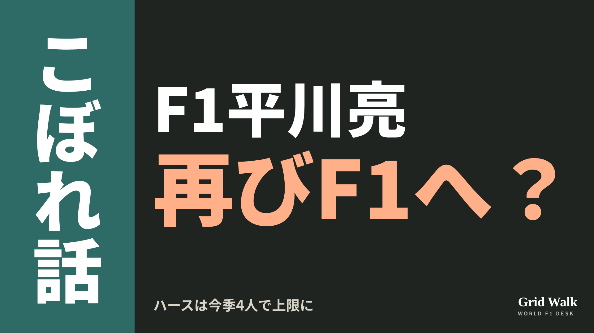<button class="cp dl" data-img="img/x_hirakawa-haas-four-driver-rule-20261111.png" data-name="x_hirakawa-haas-four-driver-rule-20261111.png">ダウンロード</button></li>
<li class="st"><div class="hd"><b>① noteをシェアするときの文</b></div><div class="bx" id="p1x0">ハースは今季すでに4人を起用し、規則の上限に。カタールとアブダビはF2と同じ週末で、カマラがF2を選べば、乗れるのは平川亮だけとドイツのMotorsport-Totalが指摘しました。逆の報道も並べてnoteにまとめました #F1jp #平川亮</div><button class="cp" data-plain="p1x0">コピー</button></li>
<li class="st"><div class="hd"><b>② ①への返信</b></div><div class="bx" id="p1x1">ほかの海外記事も読みたい方は、F1 Grid Walkへ。
https://f1gridwalk.github.io/lens/hirakawa-haas-four-driver-rule-20261111/?utm_source=x&amp;utm_campaign=hirakawa-haas-four-driver-rule-20261111</div><button class="cp" data-plain="p1x1">コピー</button></li>
<li class="st"><div class="hd"><b>③ ②への返信</b></div><div class="bx" id="p1x2">毎日の海外F1ニュースは、日本語でこちらにまとめています。
https://f1gridwalk.github.io/</div><button class="cp" data-plain="p1x2">コピー</button></li>
</ol></section><section class="part" id="p2"><h2><span class="tag">OFF GRID</span>ホンダ、来季の追加改良は2回　第3回ADUO評価で変化なし</h2><p class="sub">サイトに公開：08:11</p><ol class="steps">
<li class="st im"><div class="hd"><span class="no">1</span><b>見出し画像</b><em>画像</em></div><button class="cp dl" data-img="img/aduo-third-review-honda-20261111.png" data-name="aduo-third-review-honda-20261111_見出し画像.png">ダウンロード</button></li>
<li class="st"><div class="hd"><span class="no">2</span><b>タイトル</b></div><div class="bx" id="p2t">ホンダ、来季の追加改良は2回　第3回ADUO評価で変化なし</div><button class="cp" data-plain="p2t">タイトルをコピー</button></li>
<li class="st"><div class="hd"><span class="no">3</span><b>本文</b></div><div class="bx tall" id="p2r"><p>サンパウロGPのあと、FIAは今季3回目で最後のADUO評価の結果を出しました。並びは変わりません。ホンダは、2027年に入れられる追加のアップグレード（改良）2回を、そのまま持って来季に入ります。ADUOの仕組みは、DEEP GRIDの解説 https://f1gridwalk.github.io/deep/aduo-explained/ にあります。</p><p>FIAが示した来季4回の例の中身と、元の記事へのリンクはサイトで → <a href="https://f1gridwalk.github.io/lens/aduo-third-review-honda-20261111/?utm_source=note&amp;utm_campaign=aduo-third-review-honda-20261111">https://f1gridwalk.github.io/lens/aduo-third-review-honda-20261111/?utm_source=note&amp;utm_campaign=aduo-third-review-honda-20261111</a></p><h2>差は変わった、でも枠は同じ</h2><p>英The Raceによると、今回の評価の対象は第12戦から第18戦まで、8月のオランダGPから10月のアメリカGPまでです。FIAは、いちばん良い内燃エンジン（ICE）であるレッドブルとの差は「変化した」としながら、追加の承認は出しませんでした。各メーカーの性能の数字は、機密を理由に公表していません（英PlanetF1）。</p><p>枠は1回目の評価のままです。メルセデスはレッドブルとの差が2〜4%の範囲で、2026年と2027年に1回ずつ。アウディ、フェラーリ、ホンダは4%を超える差で、2026年と2027年に2回ずつ（PlanetF1、The Race）。4社には予算上限とエンジンのテスト台の時間の上乗せも付きます。レッドブルは、今回も改良を入れられない唯一のメーカーです。</p><p>The Raceによると、フェラーリとホンダは2026年の2回をもう使い、アウディは次の改良を2027年シーズンまで入れないとみられています。メルセデスの2026年分はまだ入っていません（ラッセルの降格の話は https://f1gridwalk.github.io/lens/russell-engine-penalty-brazil-20261107/ ）。ホンダの2回目は新しいターボでした（10月1日のコラム https://f1gridwalk.github.io/lens/honda-aduo2-20261001/ ）。</p><h2>来季、4回になる道もある</h2><p>次の評価は、2027年の開幕戦バーレーンから始まり、最初の6戦が対象です（PlanetF1）。FIAが5月に出した説明には、こんな例が載っています。2026年のカナダGPのあとに4%を超える差とされ、2026年に2回、2027年に2回を得たメーカーが、2027年の最初の評価でも同じ判定なら、2027年分2回と2028年分2回が加わります。そのメーカーは2027年に4回の改良を入れられる、というものです（FIA）。ホンダの今の枠は、この例の出発点と同じです。ただし例は今の決まりが前提で、来季の判定は分かりません。</p><p>ただ、来季の測り方は変わるかもしれません。FIAのシングルシーター部門ディレクター、ニコラス・トンバジスは、結果に自信を示したうえで、こう話しています。</p><blockquote><p>「1年目の運用は、ADUOという考え方がF1にとって正しいものだという私たちの確信も強めた」（トンバジス、PlanetF1／イギリス）</p></blockquote><p>The Raceによると、FIAはメーカーやチームと手法の見直しを進めています。案は、ターボの大きさや作動温度、エキゾーストウイングのような外の要素も勘案してICEの力を測る方法と、パワーユニット（PU）全体の性能で順位を付ける方法。2027年は燃料流量の値も新しくなります。アウディのマッティア・ビノットは、改良の枠はコンストラクターズの順位で決める方がよいと提案していました（The Race）。</p><h2>手元の2回と、来季の計画</h2><p>来季は開幕に向けて1つ、シーズン半ばにもう1つ大きな改良を入れる計画だと、アストンマーティンのニューウェイ代表が認めたことは、STORY https://f1gridwalk.github.io/topics/alonso-feet-on-the-ground/ で紹介しました。その計画が手元の2回とどう重なるのかは、ホンダもチームも明かしていません。</p><p>編集部としては、ホンダの来季の枠が2回のままか4回に増えるかは、ホンダ自身の伸びだけでなく、FIAがどの物差しを選ぶかにも左右されると見ています。</p><p><strong>来季の改良の枠は、エンジンだけの差、PU全体の差、コンストラクターズの順位の、どれで決めるのが公平だと思いますか？</strong></p><p>━━━━━━━━━━</p><p><strong>F1 Grid Walk では、世界のF1ニュースを毎日日本語でまとめています。</strong></p><p>海外の記事の要約を、毎日載せています。</p><p><a href="https://f1gridwalk.github.io/">https://f1gridwalk.github.io/</a></p><p>ほかの海外記事も読みたい方は、F1 Grid Walkへ。</p><p><a href="https://f1gridwalk.github.io/lens/aduo-third-review-honda-20261111/">https://f1gridwalk.github.io/lens/aduo-third-review-honda-20261111/</a></p><p>━━━━━━━━━━</p><p><a href="https://www.the-race.com/formula-1/fia-makes-latest-aduo-ruling-and-hints-at-2027-revamp/">出典：The Race（イギリス）</a></p><p><a href="https://www.planetf1.com/news/fia-f1-2026-aduo">出典：PlanetF1（イギリス）</a></p><p><a href="https://www.fia.com/news/power-ups-how-f1s-additional-development-upgrade-opportunities-will-be-applied-and-whats">出典：FIA（国際）</a></p></div><button class="cp" data-rich="p2r">本文をコピー</button></li>
<li class="st"><div class="hd"><span class="no">4</span><b>ハッシュタグ</b></div><div class="bx" id="p2h">#F1 #F1jp #ホンダ #アストンマーティン #ADUO #パワーユニット #FIA #サンパウロGP #F1こぼれ話 #OFFGRID</div><button class="cp" data-plain="p2h">タグをコピー</button></li>
</ol><h3 class="xh">X</h3><ol class="steps">
<li class="st im"><div class="hd"><b>X用の画像</b><em>画像</em></div>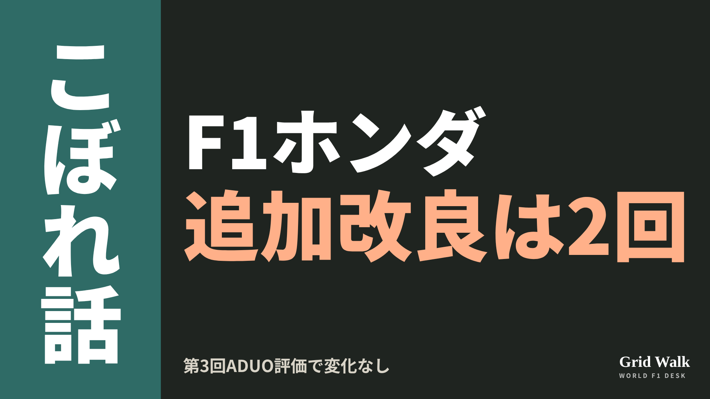<button class="cp dl" data-img="img/x_aduo-third-review-honda-20261111.png" data-name="x_aduo-third-review-honda-20261111.png">ダウンロード</button></li>
<li class="st"><div class="hd"><b>① noteをシェアするときの文</b></div><div class="bx" id="p2x0">FIAの第3回ADUO評価は変化なし。ホンダは2026年分の追加改良を使い切り、来季に残るのは2回です。レッドブルだけ権利なしのまま、2027年の測り方の見直しもnoteにまとめました #F1jp #ホンダ</div><button class="cp" data-plain="p2x0">コピー</button></li>
<li class="st"><div class="hd"><b>② ①への返信</b></div><div class="bx" id="p2x1">ほかの海外記事も読みたい方は、F1 Grid Walkへ。
https://f1gridwalk.github.io/lens/aduo-third-review-honda-20261111/?utm_source=x&amp;utm_campaign=aduo-third-review-honda-20261111</div><button class="cp" data-plain="p2x1">コピー</button></li>
<li class="st"><div class="hd"><b>③ ②への返信</b></div><div class="bx" id="p2x2">毎日の海外F1ニュースは、日本語でこちらにまとめています。
https://f1gridwalk.github.io/</div><button class="cp" data-plain="p2x2">コピー</button></li>
</ol></section><section class="part" id="p3"><h2><span class="tag">OFF GRID</span>フェルスタッペンのベルト1100回超　整備士シャック、レッドブルを去る</h2><p class="sub">サイトに公開：08:12</p><ol class="steps">
<li class="st im"><div class="hd"><span class="no">1</span><b>見出し画像</b><em>画像</em></div>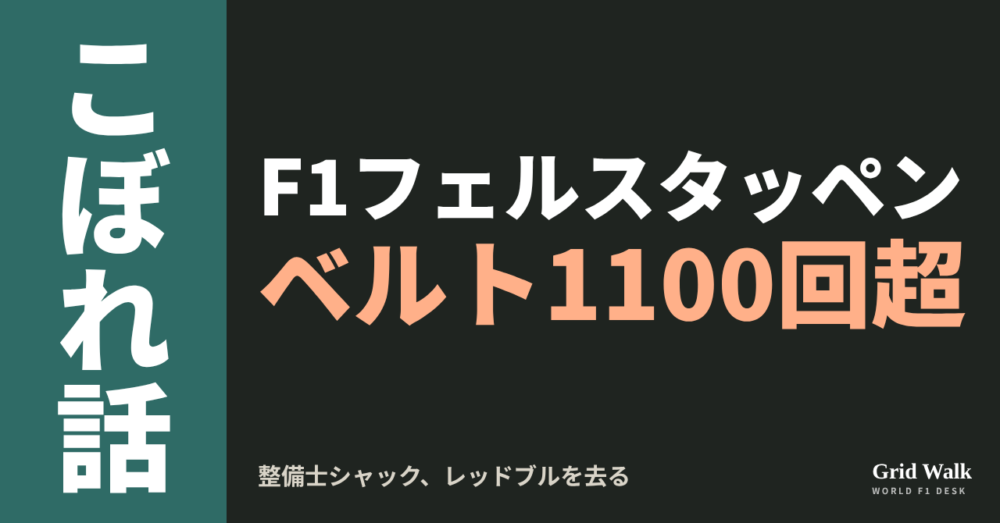<button class="cp dl" data-img="img/verstappen-mechanic-schack-leaves-20261111.png" data-name="verstappen-mechanic-schack-leaves-20261111_見出し画像.png">ダウンロード</button></li>
<li class="st"><div class="hd"><span class="no">2</span><b>タイトル</b></div><div class="bx" id="p3t">フェルスタッペンのベルト1100回超　整備士シャック、レッドブルを去る</div><button class="cp" data-plain="p3t">タイトルをコピー</button></li>
<li class="st"><div class="hd"><span class="no">3</span><b>本文</b></div><div class="bx tall" id="p3r"><p>フェルスタッペンが車に乗るとき、ほとんど毎回すぐ横でシートベルトを締めてきた整備士がいます。デンマーク人のオーレ・シャックです。オランダのF1Maximaalによると、フェルスタッペンがレッドブルで走った230戦のうち、226戦でベルトを締めたのはシャック。1週末に平均5回の走行として、その回数は1100回を超えるといいます。そのシャックが、サンパウロGPを最後にチームを離れました。</p><p>元の記事へのリンクと、ブラジルの雨のレースのコラムはサイトで → <a href="https://f1gridwalk.github.io/lens/verstappen-mechanic-schack-leaves-20261111/?utm_source=note&amp;utm_campaign=verstappen-mechanic-schack-leaves-20261111">https://f1gridwalk.github.io/lens/verstappen-mechanic-schack-leaves-20261111/?utm_source=note&amp;utm_campaign=verstappen-mechanic-schack-leaves-20261111</a></p><h2>2005年から残る最後の一人</h2><p>オランダ紙De Telegraafの取材をもとにしたF1Maximaalの記事によると、シャックはチームの最初のシーズンから残る最後のスタッフで、フェルスタッペンの車の2番手の整備士として、車の前側とベルトの固定を受け持ってきました。GPblogによると、2004年にジャガーに入り、2005年にチームがレッドブルになってもそのまま残りました。</p><p>F1Maximaalによると、休んだのは新型コロナの2020年の3戦だけ。シャック自身は、ほかに一度だけベルトを締めなかったと話しています。</p><blockquote><p>「休んだ3戦は別にして、やらなかったのは一度だけ。2020年のハンガリーだった」（シャック、De Telegraaf。F1Maximaal／オランダが伝えた）</p></blockquote><blockquote><p>「いつも、どこでも、毎週同じことをする。だから、たとえばベルトの付き方がおかしければ、すぐに気づく」（シャック、De Telegraaf。F1Maximaal／オランダが伝えた）</p></blockquote><p>離れる理由は、デンマークで家族と過ごす時間を増やすためです（F1Maximaal）。</p><h2>ベルトを締めるとき、目を見る</h2><p>最後の週末には、Viaplayにこう話しました（F1Maximaal）。</p><blockquote><p>「マックスをベルトで固定するとき、いつも目の中にあの激しさが見える」（シャック、Viaplay。F1Maximaal／オランダが伝えた）</p></blockquote><blockquote><p>「車に乗っているときは、あまり話しかけない。自分の小さな世界に入っているから」（シャック、Viaplay。F1Maximaal／オランダが伝えた）</p></blockquote><blockquote><p>「彼は変わっていない。大人になって、速くなっただけ。マックスはマックスだから」（シャック、Viaplay。F1Maximaal／オランダが伝えた）</p></blockquote><p>「とても激しい」「サーキットにいるときは、要求が厳しい」とも話しています。</p><p>はっきりした思い出の一つは、18歳のフェルスタッペンが勝った2016年のスペインGP。そのときは「何が起きているんだ？！」と口にしたそうです。今年10月のシンガポールGPでの初優勝も「なかなかうまくいかなかったから、すごく満足だった」と話しました。De Telegraafには、2016年のブラジルの雨のレースも挙げ、「彼はロナウドやメッシのよう。ただしF1の車に乗っている」とまで言っています。雨のレースは前のコラム（https://f1gridwalk.github.io/lens/verstappen-brazil-cheers-20261107/ ）でも紹介しました。</p><h2>王者からはヘルメット</h2><p>英Crash.netによると、フェルスタッペンは別れに自分のヘルメットを贈り、Viaplayにこう話しました。</p><blockquote><p>「彼は信じられないくらいだ。整備士について、こうあってほしいという姿を話すなら、それは彼だと思う」（フェルスタッペン、Viaplay。Crash.net／イギリスが伝えた）</p></blockquote><p>恋しくなるものを聞かれたシャックは「友情と競争、そして毎週勝ちたいと思うあの気持ち」と答え、こう付け加えました。「大きな音の音楽は、たぶんそれほどでもない。スピーカーの横に立っているから」（Viaplay。F1Maximaal／オランダが伝えた）。</p><p><strong>レースの映像で、ドライバーより先に目が行くピットの人はいますか？</strong></p><p>━━━━━━━━━━</p><p><strong>F1 Grid Walk では、世界のF1ニュースを毎日日本語でまとめています。</strong></p><p>海外の記事の要約を、毎日載せています。</p><p><a href="https://f1gridwalk.github.io/">https://f1gridwalk.github.io/</a></p><p>ほかの海外記事も読みたい方は、F1 Grid Walkへ。</p><p><a href="https://f1gridwalk.github.io/lens/verstappen-mechanic-schack-leaves-20261111/">https://f1gridwalk.github.io/lens/verstappen-mechanic-schack-leaves-20261111/</a></p><p>━━━━━━━━━━</p><p><a href="https://www.f1maximaal.nl/formule-1/schack-spreekt-over-band-met-verstappen-hij-is-heel-intens-en-veeleisend">出典：F1Maximaal（オランダ）</a></p><p><a href="https://www.f1maximaal.nl/formule-1/oudgediende-vertrekt-bij-red-bull-verstappen-is-als-messi-maar-dan-in-een-f1-auto">出典：F1Maximaal（オランダ）</a></p><p><a href="https://www.crash.net/f1/news/1109874/1/max-verstappens-heartwarming-gesture-red-bull-f1-veteran-leaves">出典：Crash.net（イギリス）</a></p><p><a href="https://www.gpblog.com/nl/nieuws/red-bull-ziet-opnieuw-vertrouwd-gezicht-vertrekken-schack-neemt-afscheid-na-gp-brazilie">出典：GPblog（オランダ）</a></p><p><a href="https://www.formula1.com/en/latest/article/its-taken-a-while-verstappen-thrilled-with-maiden-singapore-win-at-10th-attempt.7A6wicGmDmoONtJzg1TdLl">出典：Formula 1 公式（イギリス）</a></p></div><button class="cp" data-rich="p3r">本文をコピー</button></li>
<li class="st"><div class="hd"><span class="no">4</span><b>ハッシュタグ</b></div><div class="bx" id="p3h">#F1 #F1jp #フェルスタッペン #レッドブル #メカニック #サンパウロGP #F1こぼれ話 #OFFGRID</div><button class="cp" data-plain="p3h">タグをコピー</button></li>
</ol><h3 class="xh">X</h3><ol class="steps">
<li class="st im"><div class="hd"><b>X用の画像</b><em>画像</em></div>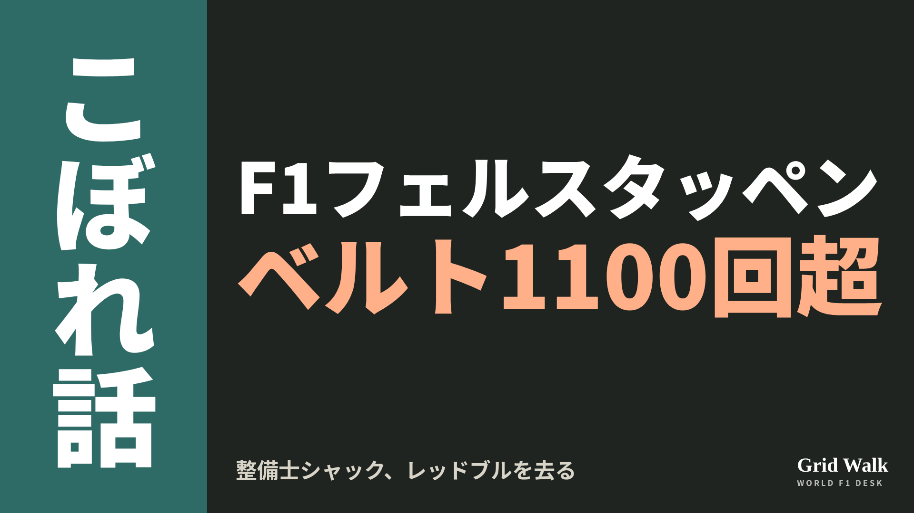<button class="cp dl" data-img="img/x_verstappen-mechanic-schack-leaves-20261111.png" data-name="x_verstappen-mechanic-schack-leaves-20261111.png">ダウンロード</button></li>
<li class="st"><div class="hd"><b>① noteをシェアするときの文</b></div><div class="bx" id="p3x0">フェルスタッペンがレッドブルで走った230戦のうち226戦で、シートベルトを締めた整備士シャックがチームを去ります。オランダのF1Maximaalによると、その数は1100回超。noteにまとめました #F1jp #フェルスタッペン</div><button class="cp" data-plain="p3x0">コピー</button></li>
<li class="st"><div class="hd"><b>② ①への返信</b></div><div class="bx" id="p3x1">ほかの海外記事も読みたい方は、F1 Grid Walkへ。
https://f1gridwalk.github.io/lens/verstappen-mechanic-schack-leaves-20261111/?utm_source=x&amp;utm_campaign=verstappen-mechanic-schack-leaves-20261111</div><button class="cp" data-plain="p3x1">コピー</button></li>
<li class="st"><div class="hd"><b>③ ②への返信</b></div><div class="bx" id="p3x2">毎日の海外F1ニュースは、日本語でこちらにまとめています。
https://f1gridwalk.github.io/</div><button class="cp" data-plain="p3x2">コピー</button></li>
</ol></section><section class="part" id="p4"><h2><span class="tag">OFF GRID</span>GPDAのサインツ「十分ではない」　ピレリの雨用タイヤに注文</h2><p class="sub">サイトに公開：08:13</p><ol class="steps">
<li class="st im"><div class="hd"><span class="no">1</span><b>見出し画像</b><em>画像</em></div>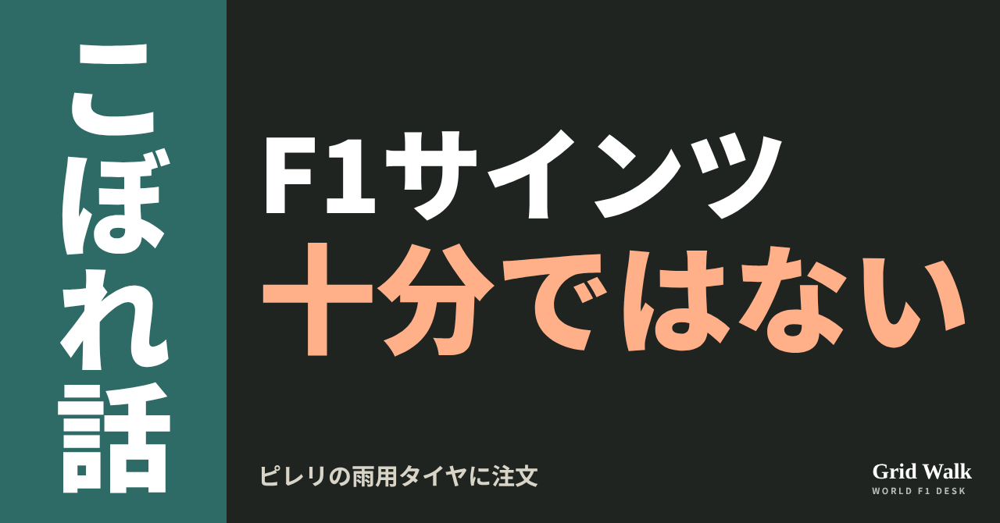<button class="cp dl" data-img="img/sainz-pirelli-wet-tyres-20261111.png" data-name="sainz-pirelli-wet-tyres-20261111_見出し画像.png">ダウンロード</button></li>
<li class="st"><div class="hd"><span class="no">2</span><b>タイトル</b></div><div class="bx" id="p4t">GPDAのサインツ「十分ではない」　ピレリの雨用タイヤに注文</div><button class="cp" data-plain="p4t">タイトルをコピー</button></li>
<li class="st"><div class="hd"><span class="no">3</span><b>本文</b></div><div class="bx tall" id="p4r"><p>全車がインターミディエイト（緑の雨用タイヤ）でスタートしたサンパウロGPのあと、ウィリアムズのカルロス・サインツが、ピレリの雨用タイヤに注文をつけました。短く言えば、こうです。</p><p>元の記事とピレリの発表へのリンク、GPDAと雨用タイヤの解説はサイトで → <a href="https://f1gridwalk.github.io/lens/sainz-pirelli-wet-tyres-20261111/?utm_source=note&amp;utm_campaign=sainz-pirelli-wet-tyres-20261111">https://f1gridwalk.github.io/lens/sainz-pirelli-wet-tyres-20261111/?utm_source=note&amp;utm_campaign=sainz-pirelli-wet-tyres-20261111</a></p><blockquote><p>「十分ではない」（サインツ、PlanetF1／イギリス）</p></blockquote><p>イギリスのPlanetF1が11月10日に伝えました（要約 https://f1gridwalk.github.io/news/en-planetf1-sainz-pirelli-wet-tyres/ ）。同誌によると、不満の声の先頭に立ったのは、GPDA（グランプリ・ドライバーズ・アソシエーション）のディレクターでもあるサインツでした。サインツは2025年2月、ベッテルの後任としてディレクターになっています（F1公式）。GPDAの役割はルールブック https://f1gridwalk.github.io/deep/rules/gpda/ で。</p><h2>インターは後ろが弱く、フルウェットは水に浮く</h2><blockquote><p>「ウェットとインターのレベルは十分ではないと思う。ピレリと一緒に、もっといいタイヤを見つける作業をしないといけない」（サインツ、PlanetF1／イギリス）</p></blockquote><p>まず、濡れたところと乾いたところが混じった路面のインターです。</p><blockquote><p>「混じった状態では、インターはまだ後ろがとても弱いタイヤだ。温まるころには、前がだめになっている」（同）</p></blockquote><p>フルウェット（青の、溝の深い雨用タイヤ）については、前日の予選を振り返りました。</p><blockquote><p>「それにフルウェットは、正直、昨日はアクアプレーニングがすごく多くて、後ろのグリップが大きく足りなかった。だから、この2つのタイヤには、まだ少し開発が足りない。分からないけどね」（同）</p></blockquote><h2>ピレリの発表は、予選も決勝も前向き</h2><p>PlanetF1の記事に、ピレリの反応は出てきません。ただ、ピレリのモータースポーツ部門の責任者、ダリオ・マラフスキは、予選のあとの発表でこう話していました。</p><blockquote><p>「この数年、切り替えの幅について進めてきた開発のおかげで、フルウェットは、コースから水たまりが消えたあとも効果を保てた。そのため、路面が良くなっていくなかで、インターへの切り替えがとてもスムーズになった」（マラフスキ、ピレリ公式／イタリア）</p></blockquote><p>マラフスキは決勝のあとの発表で、インターについてこう話しています。</p><blockquote><p>「濡れた路面から乾いた路面へ移っていく状態で、インターミディエイトは安定した性能を発揮した」（同）</p></blockquote><p>ピレリによると、決勝は14周を終えたところで最初のドライバーたちがソフトに替え、終盤に雨が戻りました。同じ混じった路面のインターについて、サインツは後ろと前のグリップの弱さを、マラフスキは性能の安定ぶりを語っています。切り替えの目安はルールブック https://f1gridwalk.github.io/deep/rules/full-wet/ で。</p><h2>土曜は手応え、日曜は19位</h2><p>F1公式によると、予選はアレクサンダー・アルボンが10番手でQ3に進み、サインツは15番手。サインツは予選のあと、こう話していました。</p><blockquote><p>「難しい予選だったけど、車はとてもいい感じだった」「フルウェットでは強かった。タイヤを機能させられて、競争力のあるタイムを出せていた」（サインツ、F1公式）</p></blockquote><p>決勝は、FIAの正式結果でアルボンが15位、サインツは2周遅れの19位（F1公式）。PlanetF1によると、ウィリアムズはこの14戦で1点だけ、直近5戦は無得点です。サインツは、チームの現状をこう話しました。</p><blockquote><p>「僕たちは単純に遅すぎる。ウェットでも、ドライでも、スリックでも、混じった状態でも、フルウェットでも」「本当に、できることはない」（サインツ、PlanetF1／イギリス）</p></blockquote><p>雨の予選のあとのラッセルらの警告（ https://f1gridwalk.github.io/lens/wet-race-horrific-warning-20261108/ ）とあわせて、ピレリがどう答えるかが待たれます。</p><p><strong>雨のレースをもっと走れるようにするには、タイヤとクルマ、どちらから変えるべきだと思いますか？</strong></p><p>━━━━━━━━━━</p><p><strong>F1 Grid Walk では、世界のF1ニュースを毎日日本語でまとめています。</strong></p><p>海外の記事の要約を、毎日載せています。</p><p><a href="https://f1gridwalk.github.io/">https://f1gridwalk.github.io/</a></p><p>ほかの海外記事も読みたい方は、F1 Grid Walkへ。</p><p><a href="https://f1gridwalk.github.io/lens/sainz-pirelli-wet-tyres-20261111/">https://f1gridwalk.github.io/lens/sainz-pirelli-wet-tyres-20261111/</a></p><p>━━━━━━━━━━</p><p><a href="https://www.planetf1.com/news/not-good-enough-carlos-sainz-demands-pirelli-wet-tyre-improvements">出典：PlanetF1（イギリス）</a></p><p><a href="https://press.pirelli.com/from-full-wets-to-inters-in-qualifying-norris-takes-pole-in-so-paulo/">出典：Pirelli 公式（イタリア）</a></p><p><a href="https://press.pirelli.com/from-pole-to-victory-norris-triumphs-in-so-paulo-on-intermediates/">出典：Pirelli 公式（イタリア）</a></p><p><a href="https://www.formula1.com/en/latest/article/what-the-teams-said-qualifying-in-brazil-2026.1mHPYet4OKECujD4Pc1l1r">出典：Formula 1 公式（イギリス）</a></p><p><a href="https://www.formula1.com/en/results/2026/races/1299/brazil/race-result">出典：Formula 1 公式（イギリス）</a></p><p><a href="https://www.formula1.com/en/latest/article/sainz-replaces-vettel-as-director-of-grand-prix-drivers-association.cvS1aBzKXJ4guvQ0lPhtO">出典：Formula 1 公式（イギリス）</a></p></div><button class="cp" data-rich="p4r">本文をコピー</button></li>
<li class="st"><div class="hd"><span class="no">4</span><b>ハッシュタグ</b></div><div class="bx" id="p4h">#F1 #F1jp #サインツ #ウィリアムズ #ピレリ #雨用タイヤ #サンパウロGP #GPDA #F1こぼれ話 #OFFGRID</div><button class="cp" data-plain="p4h">タグをコピー</button></li>
</ol><h3 class="xh">X</h3><ol class="steps">
<li class="st im"><div class="hd"><b>X用の画像</b><em>画像</em></div>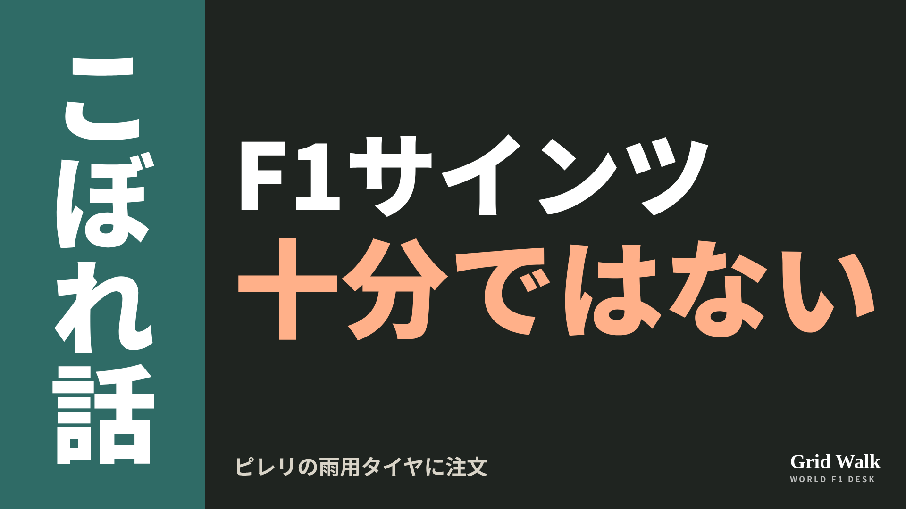<button class="cp dl" data-img="img/x_sainz-pirelli-wet-tyres-20261111.png" data-name="x_sainz-pirelli-wet-tyres-20261111.png">ダウンロード</button></li>
<li class="st"><div class="hd"><b>① noteをシェアするときの文</b></div><div class="bx" id="p4x0">GPDAのディレクターでもあるサインツが、雨のサンパウロのあと、ピレリの雨用タイヤに「十分ではない」。同じインターを、ピレリは前向きに評価していました。noteにまとめました #F1jp #サインツ</div><button class="cp" data-plain="p4x0">コピー</button></li>
<li class="st"><div class="hd"><b>② ①への返信</b></div><div class="bx" id="p4x1">ほかの海外記事も読みたい方は、F1 Grid Walkへ。
https://f1gridwalk.github.io/lens/sainz-pirelli-wet-tyres-20261111/?utm_source=x&amp;utm_campaign=sainz-pirelli-wet-tyres-20261111</div><button class="cp" data-plain="p4x1">コピー</button></li>
<li class="st"><div class="hd"><b>③ ②への返信</b></div><div class="bx" id="p4x2">毎日の海外F1ニュースは、日本語でこちらにまとめています。
https://f1gridwalk.github.io/</div><button class="cp" data-plain="p4x2">コピー</button></li>
</ol></section><section class="part" id="p5"><h2><span class="tag">OFF GRID</span>F2王者はなぜF1に上がれない？　直近4人で昇格はボルトレートだけ</h2><p class="sub">サイトに公開：08:14</p><ol class="steps">
<li class="st im"><div class="hd"><span class="no">1</span><b>見出し画像</b><em>画像</em></div>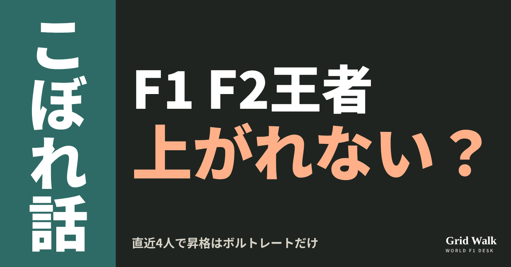<button class="cp dl" data-img="img/f2-champions-overlooked-20261111.png" data-name="f2-champions-overlooked-20261111_見出し画像.png">ダウンロード</button></li>
<li class="st"><div class="hd"><span class="no">2</span><b>タイトル</b></div><div class="bx" id="p5t">F2王者はなぜF1に上がれない？　直近4人で昇格はボルトレートだけ</div><button class="cp" data-plain="p5t">タイトルをコピー</button></li>
<li class="st"><div class="hd"><span class="no">3</span><b>本文</b></div><div class="bx tall" id="p5r"><p>F2のチャンピオンになっても、F1の席が待っているとは限りません。ドイツのMotorsport-Totalは、直近4人のF2王者のうち、F1に上がれたのはガブリエル・ボルトレートだけだと指摘しました。その一方で、F2の1年目を14位で終えた若者が、いまレッドブルで走っています。</p><p>元の記事へのリンクと、ボルトレートが王座を決めた2024年のアブダビの話はサイトで → <a href="https://f1gridwalk.github.io/lens/f2-champions-overlooked-20261111/?utm_source=note&amp;utm_campaign=f2-champions-overlooked-20261111">https://f1gridwalk.github.io/lens/f2-champions-overlooked-20261111/?utm_source=note&amp;utm_campaign=f2-champions-overlooked-20261111</a></p><h2>直近4人の王者のその後</h2><p>上がれなかった王者として同誌が挙げたのは、2022年のフェリペ・ドルゴビッチ、2023年のテオ・プルシェール、2025年のレオナルド・フォルナローリの3人です。2024年王者のボルトレートは、2025年にザウバー（いまのアウディ）でF1デビューしました。アブダビで0.5点差を守ったその年の話はSTORYで（https://f1gridwalk.github.io/topics/bortoleto-twenty-years/ ）。</p><p>プルシェールについては、当時のザウバー（アルファロメオ）が2024年のレースの席に上げず、リザーブにとどめた、とイギリスのThe Raceが2023年11月に伝えていました。</p><p>フォルナローリは2025年、ルーキーとしてF2を制しました。それでも2026年の席はなく、マクラーレンがリザーブとして契約し、何度かのテスト走行で支えてきました。同誌によると、2027年のグリッドにも席はありません。</p><h2>ハジャー「F2で大事なのは結果じゃない」</h2><p>反対に、F2のタイトルなしでF1に来たのが、オリバー・ベアマン、アイザック・ハジャー、アンドレア・キミ・アントネッリです。2024年のF2で、ベアマンは12位、アントネッリは6位でした（同誌）。そのアントネッリは今季、F1の王者になりました（F1公式）。</p><p>ハジャーはF2の1年目を14位で終え、2年目はボルトレートに次ぐ2位でした。自分の経験から、こう話しています（ドイツ語の記事から訳出）。</p><blockquote><p>「F2で大事なのは結果じゃない」（ハジャー、Motorsport-Total／ドイツ）</p></blockquote><p>チームはこう問うのだ、とハジャーは言います。</p><blockquote><p>「そのドライバーに何を見るのか？」「チームの中で、車をよくするために何をしているのか？」「使える車から、どうやって最大限を引き出すのか？」（同）</p></blockquote><blockquote><p>「F2でいろいろなことが起きるのは、みんな知っている。信頼性のトラブルとかね」「世の中は、いつもそんなに公平じゃない」「でも目指すのは、君の価値を分かってくれる誰かを見つけることなんだ」（同）</p></blockquote><p>ハジャーは、ヘルムート・マルコ氏が14位だった自分に何かを見てくれたことを「本当に大きな幸運」だったと振り返り、こう続けました。</p><blockquote><p>「F2の1年目、僕は14位だった。そしていま、僕はレッドブルで走っている。じゃあ、あれに何か意味はあった？　ない」（同）</p></blockquote><p>ハジャーは11月8日のサンパウロGPで3位でした（FIA）。</p><h2>今年の3人は</h2><p>今季のF2は、ラファエル・カマラが207点で首位、ニコラ・ツォロフが200点、アレクサンダー・ダンが189点で続きます（FIA、11月11日時点）。フェラーリ育成のカマラは、ハースと2027年からの複数年契約を結んでおり（F1公式）、サンパウロGPでF1デビューも果たしました（https://f1gridwalk.github.io/lens/camara-debut-race-20261109/ ）。</p><p>レッドブル育成のツォロフはレーシングブルズの席を目指します（https://f1gridwalk.github.io/lens/lawson-racing-bulls-stay-20261110/ ）。アルピーヌ育成のダンについて、同誌は、いまのところ来年F1に上がる現実的な見込みはおそらくなく、タイトルを取ってもそれは変わらないだろうと書いています。</p><p>編集部としては、カマラがタイトルを取れば、2024年のボルトレート以来、翌年のF1の席が決まっている王者になると見ています（記事の要約は https://f1gridwalk.github.io/news/de-motorsporttotal-f2-champions-overlooked/ ）。</p><p><strong>F2のタイトルと、チームが見る伸びしろ。あなたなら、どちらを重く見ますか？</strong></p><p>━━━━━━━━━━</p><p><strong>F1 Grid Walk では、世界のF1ニュースを毎日日本語でまとめています。</strong></p><p>海外の記事の要約を、毎日載せています。</p><p><a href="https://f1gridwalk.github.io/">https://f1gridwalk.github.io/</a></p><p>ほかの海外記事も読みたい方は、F1 Grid Walkへ。</p><p><a href="https://f1gridwalk.github.io/lens/f2-champions-overlooked-20261111/">https://f1gridwalk.github.io/lens/f2-champions-overlooked-20261111/</a></p><p>━━━━━━━━━━</p><p><a href="https://de.motorsport.com/f1/news/warum-uebergehen-die-teams-formel-2-meister-bei-der-cockpitvergabe-26111010/3456931/">出典：motorsport.com ドイツ版（Motorsport-Total と同じ記事）（ドイツ）</a></p><p><a href="https://www.formel1.de/news/news/2026-11-10/warum-uebergehen-die-teams-formel-2-meister-bei-der-cockpitvergabe">出典：Formel1.de（Motorsport-Total.com 発）（ドイツ）</a></p><p><a href="https://www.the-race.com/formula-1/why-another-f2-champion-isnt-getting-an-f1-seat/">出典：The Race（イギリス）</a></p><p><a href="https://www.formula1.com/en/latest/article/f2-fornaroli-seals-title-with-a-round-to-spare-as-martins-wins-in-qatar.251G681I8gZhll4ENAqGHC">出典：Formula 1 公式（イギリス）</a></p><p><a href="https://www.formula1.com/en/latest/article/ferrari-junior-rafael-camara-promoted-to-f1-with-haas-for-2027.1RSxvnFaLu8Hd3JD2ppFsz">出典：Formula 1 公式（イギリス）</a></p><p><a href="https://www.formula1.com/en/latest/article/antonelli-crowned-youngest-ever-f1-champion-as-verstappen-wins-eventful-mexico-city-grand-prix.xpMMeef0KmRURs9IDs3LH">出典：Formula 1 公式（イギリス）</a></p><p><a href="https://api.fia.com/events/formula-2-championship/season-2026/standings">出典：FIA（国際）</a></p></div><button class="cp" data-rich="p5r">本文をコピー</button></li>
<li class="st"><div class="hd"><span class="no">4</span><b>ハッシュタグ</b></div><div class="bx" id="p5h">#F1 #F1jp #F2 #ハジャー #ボルトレート #フォルナローリ #カマラ #ツォロフ #F1こぼれ話 #OFFGRID</div><button class="cp" data-plain="p5h">タグをコピー</button></li>
</ol><h3 class="xh">X</h3><ol class="steps">
<li class="st im"><div class="hd"><b>X用の画像</b><em>画像</em></div>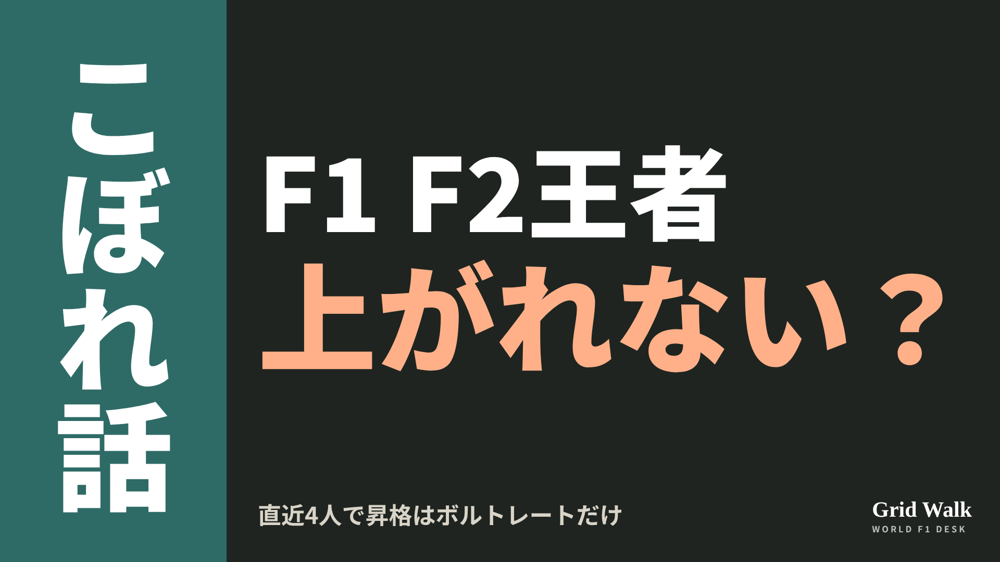<button class="cp dl" data-img="img/x_f2-champions-overlooked-20261111.png" data-name="x_f2-champions-overlooked-20261111.png">ダウンロード</button></li>
<li class="st"><div class="hd"><b>① noteをシェアするときの文</b></div><div class="bx" id="p5x0">直近4人のF2王者のうち、F1に上がったのはボルトレートだけ。ハジャーは「F2は結果がすべてではない」。今季首位のカマラ、ツォロフの行方もnoteにまとめました #F1jp #F2</div><button class="cp" data-plain="p5x0">コピー</button></li>
<li class="st"><div class="hd"><b>② ①への返信</b></div><div class="bx" id="p5x1">ほかの海外記事も読みたい方は、F1 Grid Walkへ。
https://f1gridwalk.github.io/lens/f2-champions-overlooked-20261111/?utm_source=x&amp;utm_campaign=f2-champions-overlooked-20261111</div><button class="cp" data-plain="p5x1">コピー</button></li>
<li class="st"><div class="hd"><b>③ ②への返信</b></div><div class="bx" id="p5x2">毎日の海外F1ニュースは、日本語でこちらにまとめています。
https://f1gridwalk.github.io/</div><button class="cp" data-plain="p5x2">コピー</button></li>
</ol></section><section class="part" id="p6"><h2><span class="tag">OFF GRID</span>ウォルフ「フランクと同じ銀河にすらいない」　王座の数で並んでも</h2><p class="sub">サイトに公開：08:15</p><ol class="steps">
<li class="st im"><div class="hd"><span class="no">1</span><b>見出し画像</b><em>画像</em></div>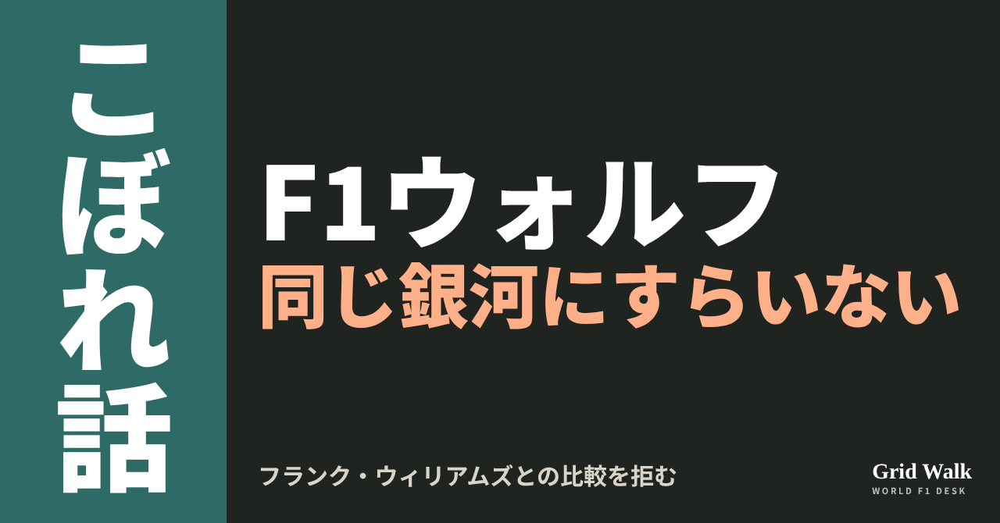<button class="cp dl" data-img="img/wolff-not-frank-williams-20261111.png" data-name="wolff-not-frank-williams-20261111_見出し画像.png">ダウンロード</button></li>
<li class="st"><div class="hd"><span class="no">2</span><b>タイトル</b></div><div class="bx" id="p6t">ウォルフ「フランクと同じ銀河にすらいない」　王座の数で並んでも</div><button class="cp" data-plain="p6t">タイトルをコピー</button></li>
<li class="st"><div class="hd"><span class="no">3</span><b>本文</b></div><div class="bx tall" id="p6r"><p>サンパウロGPで、メルセデスが9度目のコンストラクターズ（チーム）王座を決めました。トト・ウォルフ代表は、チームの王座の数で、ウィリアムズの創設者フランク・ウィリアムズに並んだことになります。ところが本人は、比べられることをはっきり断りました。「フランクと同じ銀河にすらいない」。</p><p>元の英語の記事へのリンクと、独Motorsport-Totalの記事の要約はサイトで → <a href="https://f1gridwalk.github.io/lens/wolff-not-frank-williams-20261111/?utm_source=note&amp;utm_campaign=wolff-not-frank-williams-20261111">https://f1gridwalk.github.io/lens/wolff-not-frank-williams-20261111/?utm_source=note&amp;utm_campaign=wolff-not-frank-williams-20261111</a></p><h2>CEOは並んだと言い、本人は違うと言う</h2><p>王座が決まったあと、F1のステファノ・ドメニカリCEOは祝福の言葉を出しました（ANI通信、The Tribune掲載／インド）。</p><blockquote><p>「9度目のコンストラクターズ王座で、友人のトト・ウォルフは、偉大なサー・フランク・ウィリアムズに並ぶ」（ドメニカリ、ANI通信／インド）</p></blockquote><p>決まった直後のウォルフ代表の言葉は、コラム https://f1gridwalk.github.io/lens/mercedes-constructors-title-won-20261109/ で紹介しました。ブラジルGPのあと、本人はもう一歩踏み込みます。Motorsport.com英語版によると、ウィリアムズと、マクラーレンを率いたロン・デニスについて、こう話しました。</p><blockquote><p>「考えてみれば、この2人はスポーツの巨人だ」「私は、フランクと同じ銀河にすらいない。フランクは事故のあとも、偉大なことを成し遂げてきた」（ウォルフ、Motorsport.com英語版／国際）</p></blockquote><p>デニスについては、こう話しています。</p><blockquote><p>「私は、自分があの格にいるとは決して思わない」（同）</p></blockquote><p>フランク・ウィリアムズは1986年3月、ポール・リカールでのテストのあと、車の事故で背骨を折り、その後の人生を車いすで過ごしました。チームの王座9回とドライバーの王座7回は、1980年代と90年代に積み上げたものです。2021年に79歳で亡くなっています（Sky Sports／イギリス）。ウォルフ代表は、2013年にメルセデスへ移る前、ウィリアムズでフランクと一緒に働いていました（ClubS1／ブルガリア）。</p><h2>17回と16回、数え方で順番が変わる</h2><p>チームの王座だけで数えると、ウォルフ代表はウィリアムズと同じ9回です。ところがMotorsport.com英語版は、チーム代表として手にした王座をドライバーとチームの両方で足すと、ウォルフ代表は17回でマクラーレンのデニスと同じ、ウィリアムズは16回だと書いています。この数え方なら、ウォルフ代表はもうウィリアムズを1つ上回っています。</p><p>F1公式サイトによると、ウィリアムズに並んだことについては、こうも話しています。</p><blockquote><p>「うちには、9回より多く勝ち取った人たちもいる。ブラウンにいた人たち、ホンダで勝っていた人たち。彼らのほうが多いんだ。だから、まあ、受け取っておくよ。素晴らしいことだ」（ウォルフ、F1公式サイト）</p></blockquote><h2>アントネッリとセナも、比べないで</h2><p>比べられるのを嫌うのは、自分のことだけではありません。王者になったアンドレア・キミ・アントネッリをアイルトン・セナと比べる声にも、こう答えています。</p><blockquote><p>「キミをセナと比べることには、ずっと乗り気じゃなかった。フランク・ウィリアムズやロン・デニスと同じで、セナはこのスポーツの巨人だから」「キミはキミ、セナはセナだった」（ウォルフ、Motorsport.com英語版／国際）</p></blockquote><p>「20歳のドライバーにこうした基準を課すのは、大きな重圧だと思う」とも話し、こう続けました（同）。</p><blockquote><p>「たぶん今の段階では、彼は『セニーニャ』で、まだセナではない」（ウォルフ、Motorsport.com英語版／国際）</p></blockquote><p>記録の数で並んでも、ウォルフ代表は巨人の名前を自分より上に置きました。自分のチームの若い王者にも、同じ物差しを当てないよう求めています。</p><p><strong>チーム代表の成功は、チームの王座だけで数えますか？　それともドライバーの王座も足しますか？</strong></p><p>━━━━━━━━━━</p><p><strong>F1 Grid Walk では、世界のF1ニュースを毎日日本語でまとめています。</strong></p><p>海外の記事の要約を、毎日載せています。</p><p><a href="https://f1gridwalk.github.io/">https://f1gridwalk.github.io/</a></p><p>ほかの海外記事も読みたい方は、F1 Grid Walkへ。</p><p><a href="https://f1gridwalk.github.io/lens/wolff-not-frank-williams-20261111/">https://f1gridwalk.github.io/lens/wolff-not-frank-williams-20261111/</a></p><p>━━━━━━━━━━</p><p><a href="https://sports.yahoo.com/articles/kimi-antonelli-isn-t-ayrton-162505114.html">出典：Motorsport.com英語版（Yahoo Sportsに転載）（国際）</a></p><p><a href="https://au.motorsport.com/f1/news/toto-wolff-kimi-antonelli-isnt-ayrton-senna-yet-but-he-may-be-a-senninha-/10873545/">出典：Motorsport.com（オーストラリア版）（国際）</a></p><p><a href="https://www.tribuneindia.com/news/brazil/f1-ceo-stefano-domenicali-congratulates-mercedes-on-2026-constructors-title">出典：The Tribune（ANI通信）（インド）</a></p><p><a href="https://www.formula1.com/en/latest/article/wolff-already-thinking-about-2027-despite-constructors-championship-win-in-brazil.21aGFbwHKbhjkcmpeYVrZV">出典：F1公式サイト（国際）</a></p><p><a href="https://www.formula1.com/en/latest/article/why-this-mercedes-title-victory-is-one-of-toto-wolffs-greatest-triumphs.520nWmdi7JAxC4ALa8HnPd">出典：F1公式サイト（国際）</a></p><p><a href="https://www.skysports.com/f1/news/12481456/f1-legend-sir-frank-williams-dies-aged-79">出典：Sky Sports（イギリス）</a></p><p><a href="https://www.fia.com/node/38775">出典：FIA（国際）</a></p><p><a href="https://clubs1.net/en/news/wolff-equals-frank-williams-record-he-never-thought-that-was-possible/">出典：ClubS1（ブルガリア）</a></p></div><button class="cp" data-rich="p6r">本文をコピー</button></li>
<li class="st"><div class="hd"><span class="no">4</span><b>ハッシュタグ</b></div><div class="bx" id="p6h">#F1 #F1jp #ウォルフ #メルセデス #フランクウィリアムズ #ロンデニス #サンパウロGP #F1こぼれ話 #OFFGRID</div><button class="cp" data-plain="p6h">タグをコピー</button></li>
</ol><h3 class="xh">X</h3><ol class="steps">
<li class="st im"><div class="hd"><b>X用の画像</b><em>画像</em></div>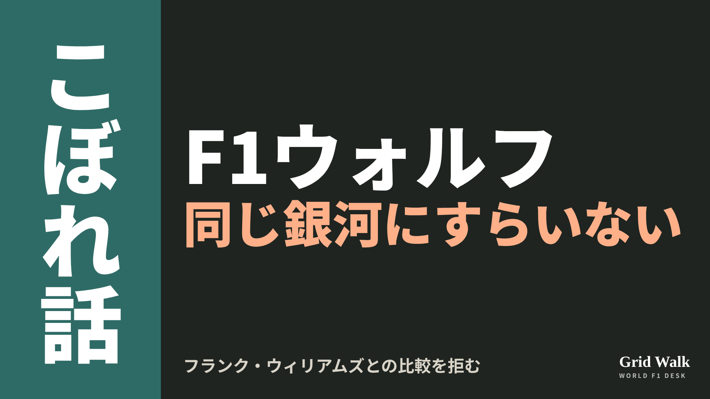<button class="cp dl" data-img="img/x_wolff-not-frank-williams-20261111.png" data-name="x_wolff-not-frank-williams-20261111.png">ダウンロード</button></li>
<li class="st"><div class="hd"><b>① noteをシェアするときの文</b></div><div class="bx" id="p6x0">チームの王座9回でウィリアムズと並んだメルセデス。ウォルフ代表は「フランクと同じ銀河にすらいない」と比べられることを拒みました。デニスへの言葉もnoteにまとめました #F1jp #ウォルフ</div><button class="cp" data-plain="p6x0">コピー</button></li>
<li class="st"><div class="hd"><b>② ①への返信</b></div><div class="bx" id="p6x1">ほかの海外記事も読みたい方は、F1 Grid Walkへ。
https://f1gridwalk.github.io/lens/wolff-not-frank-williams-20261111/?utm_source=x&amp;utm_campaign=wolff-not-frank-williams-20261111</div><button class="cp" data-plain="p6x1">コピー</button></li>
<li class="st"><div class="hd"><b>③ ②への返信</b></div><div class="bx" id="p6x2">毎日の海外F1ニュースは、日本語でこちらにまとめています。
https://f1gridwalk.github.io/</div><button class="cp" data-plain="p6x2">コピー</button></li>
</ol></section></main><script>
function done(b,msg){const t=b.dataset.t||b.textContent;b.dataset.t=t;b.classList.add('ok');b.textContent=msg||'コピーしました';setTimeout(()=>{b.classList.remove('ok');b.textContent=t},2000)}
function selectEl(el){const r=document.createRange();r.selectNodeContents(el);const s=getSelection();s.removeAllRanges();s.addRange(r)}
async function rich(el,b){
  try{await navigator.clipboard.write([new ClipboardItem({'text/html':new Blob([el.innerHTML],{type:'text/html'}),'text/plain':new Blob([el.innerText],{type:'text/plain'})})]);done(b);return}catch(e){}
  selectEl(el);let ok=false;try{ok=document.execCommand('copy')}catch(e){}
  if(ok){getSelection().removeAllRanges();done(b)}else{done(b,'選択しました。コピーしてください')}}
async function plain(el,b){
  try{await navigator.clipboard.writeText(el.innerText);done(b);return}catch(e){}
  selectEl(el);let ok=false;try{ok=document.execCommand('copy')}catch(e){}
  if(ok){getSelection().removeAllRanges();done(b)}else{done(b,'選択しました。コピーしてください')}}
let dlns=null;(async()=>{try{dlns=await window.claude?.use?.("downloads")}catch(e){dlns=null}})();
async function img(src,b){
  b.dataset.t=b.dataset.t||b.textContent;
  if(!dlns){try{dlns=await window.claude?.use?.("downloads")}catch(e){}}
  if(!dlns){b.textContent='ダウンロードできませんでした';setTimeout(()=>{b.textContent=b.dataset.t},3500);return}
  try{const blob=await fetch(src).then(r=>r.blob());b.textContent='保存の確認を開いています…';
    await dlns.save({filename:b.dataset.name,data:blob});done(b,'ダウンロードしました')}
  catch(e){const c=e&&e.code;b.textContent=c==='declined'?'キャンセルしました':c==='rate_limited'?'少し待ってからもう一度押してください':'ダウンロードできませんでした';setTimeout(()=>{b.textContent=b.dataset.t},3500)}}
document.querySelectorAll('.cp').forEach(b=>b.addEventListener('click',()=>{
  if(b.dataset.rich)rich(document.getElementById(b.dataset.rich),b);
  else if(b.dataset.plain)plain(document.getElementById(b.dataset.plain),b);
  else img(b.dataset.img,b)}));
</script>